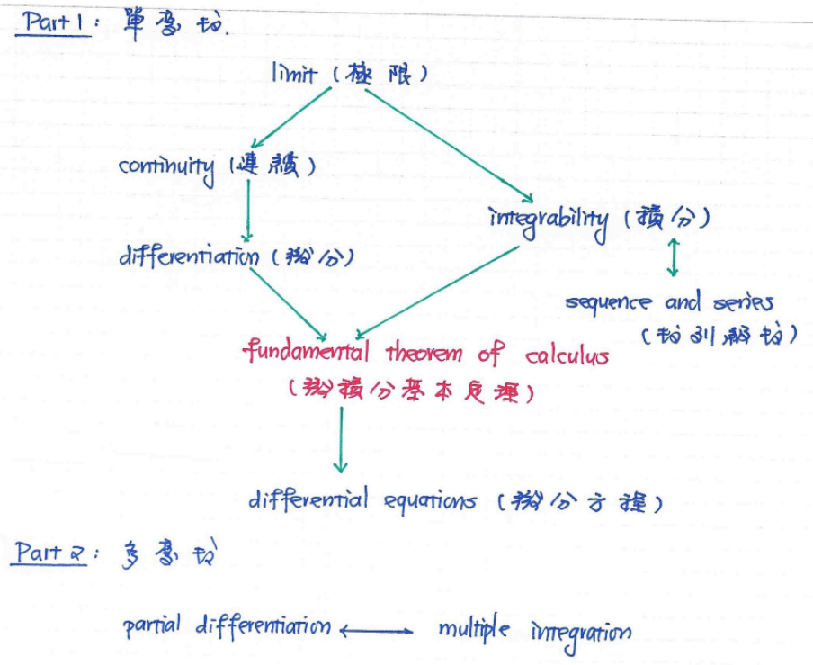

微積分Calculus
觀念

微積分是數學的一個重要分支，主要研究函數的變化率和累積量。微積分在物理、工程、經濟學等領域廣泛的應用，幫助我們理解和描述自然現象和各種變化過程。
主要的兩個部分為微分學和積分學。微分學關注函數的瞬時變化率，即為導數，而積分學則關注累積量，即為積分。
微積分的基本概念包括極限、導數和積分。
極限是理解函數行為的基礎，導數描述函數在某一點的變化率，而積分則用於計算面積、體積等累積量。
微積分的發展始於17世紀，由牛頓和萊布尼茲獨立發現，並迅速成為現代科學和工程的重要工具。
極限
極限的定義
極限是描述函數在某一點附近的行為。當自變量接近某一特定值時，函數的值趨近於某一特定值，這個特定值就是函數在該點的極限。
極限的表示法
極限通常表示為：
表示當x接近a時，函數f(x)的值趨近於L。
此極限的ε-δ定義
即對於任意小的正數ε，存在一個正數δ，使得當自變量x與極限點a的距離小於δ時，函數f(x)與極限值L的距離小於ε。
極限的性質
- 唯一性：
如果極限存在，則其值是唯一的。
- 四則運算：
極限的和、差、積、商的極限可以分別計算(但有條件)。
-
和差：
-
相乘 ：
ex :
-
相除 ：
ex :
- 夾擠定理：
常見的極限計算方法
- 直接代入法：
將自變量的極限值直接代入函數中計算。
- 因式分解法：
將函數進行因式分解，然後再進行極限計算。
- 有理化法：
對於含有根號的函數，可以通過有理化來簡化計算。
- 洛必達法則：
當極限表現為0/0或∞/∞形式時，可以使用洛必達法則進行求導後再計算極限。
一些相關的ε-δ定義
- 函數在某點連續的定義
-
正負無限大的定義
-
當x趨近於正無限大時，f(x)趨近於L的定義
- 當x趨近於負無限大時，f(x)趨近於L的定義
連續
函數連續的定義
函數f(x)在點x=a處連續的定義為：
即當x趨近於a時，函數f(x)的極限值等於函數在該點的值。
連續函數的性質
- 和差積商：
連續函數的和、差、積、商（分母不為零）仍然是連續函數。
- 複合(合成)函數：
如果函數g(x)在點x=a處連續，且函數f(x)在點x=g(a)處連續，則複合函數f(g(x))在點x=a處連續。
- 極值定理：
如果函數f(x)在閉區間[a, b]上連續，則f(x)在該區間內必有最大值和最小值。
不連續的定義
函數f(x)在點x=a處不連續的定義為：
即當x趨近於a時，函數f(x)的極限值不等於函數在該點的值。
不連續的類型
- 可去不連續：
函數在某點的極限存在，但函數值未定義或不等於極限值。
- 跳躍不連續：
函數在某點的左右極限存在但不相等。
- 無限不連續：
函數在某點的極限趨近於無限大或無限小。
微分
微分是微積分中的一個重要概念，主要用於描述函數的變化率。通過微分，我們可以了解函數在某一點的瞬時變化情況，這對於分析和理解各種現象非常有用。
導數的定義
導數是描述函數在某一點的變化率。函數f(x)在點x=a處的導數定義為：
表示當h趨近於0時，函數f在點a處的變化率。若上式的極限存在則f(x)在a處可微(Differentiable at a)。表示成
其中
為Lagrange所採用的符號(Newton採用
的符號)，而
為Leibniz所採用的符號。
導數與連續的關係
如果函數f(x)在點x=a處可微，則f(x)在該點連續。但反之不一定成立，即函數在某點連續不代表在該點可微。
例如，函數f(x)=|x|在x=0處連續，但不可微，因為左右導數不相等。
導數的幾何意義
導數在幾何上表示函數圖像在某一點的切線斜率。這意味著導數可以用來描述函數在該點的瞬時變化情況。
導數的計算規則
- 常數法則：
常數的導數為0。
- 冪函數法則：
的導數為
。
- 和差法則：
導數的和或差等於各項導數的和或差。
- 乘法法則：
的導數為
。
- 除法法則：
的導數為
- 鏈式法則：
- 反函數微分法則：
導數的應用
- 尋找函數的極值：
通過導數可以找到函數的最大值和最小值。
- 曲線的切線方程：
利用導數可以求出曲線在某一點的切線方程。
- 物理中的速度和加速度：
導數用於描述物體的速度和加速度。
常見的函數微分
- 多項式函數的導函數：
- 指數函數的導函數：
-
-
- 對數函數的導函數：
-
-
- 三角函數的導函數：
-
-
-
-
-
-
高階導數
高階導數是指對一個函數進行一次以上的微分運算所得到的結果。
函數f(x)的第n階導數表示為：
公式為 :
積分
積分是微積分中的另一個重要概念，主要用於計算函數的累積量。通過積分，我們可以計算面積、體積以及其他累積量，這對於分析和理解各種現象非常有用。
積分主要分為「不定積分Indefinite integrals」和「定積分Definite integral」兩種。
「不定積分」用於求解函數的原函數，而「定積分」則用於計算函數在某一區間內的累積量。
不定積分的定義
不定積分是指對函數進行積分，得到一個包含任意常數C的函數。函數f(x)的不定積分表示為：
定積分的定義
定積分是指在區間[a, b]上對函數進行積分，表示為：
表示在區間[a, b]上函數
的累積量。
基本積分公式
- 常數函數的積分：
- 冪函數的積分：
-
-
- 指數函數的積分：
-
-
- 對數函數的積分：
-
-
- 三角函數的積分：
-
-
-
-
-
-
- 積分技巧：
- 代換積分法(視為合成函數積分法)：
- 三角代換法：
- 當被積函數含有
，則令
故 :
-
-
- 當被積函數含有
，則令
故 :
-
-
- 當被積函數含有
，則令
故 :
-
-
- 分部積分法：
- 部分分式積分法：
資料參考
如有任何問題，請聯絡我們:
mail:huaug9672@gmail.com
GitHub:https://github.com/HENRY596196
此為0.8版本